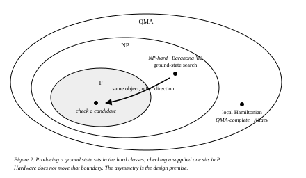
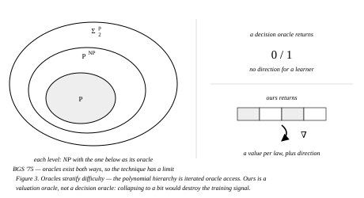
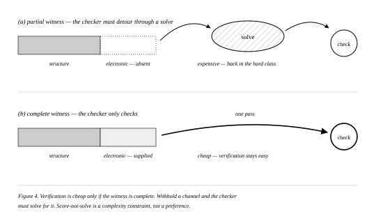
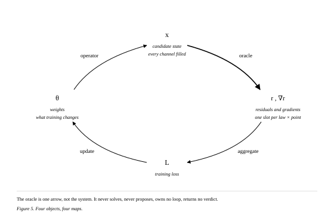
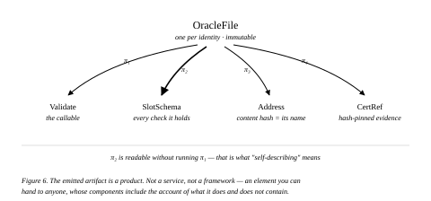
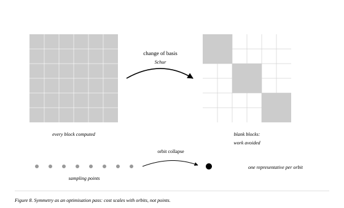
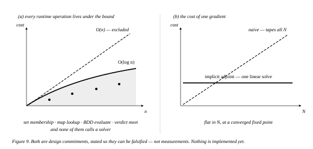
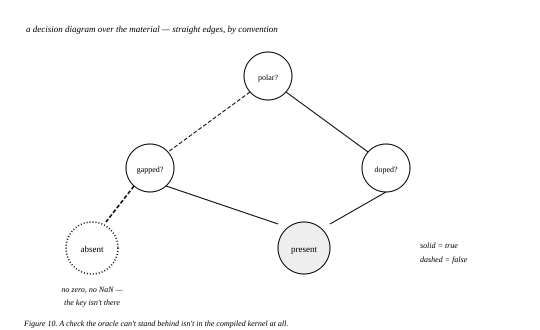
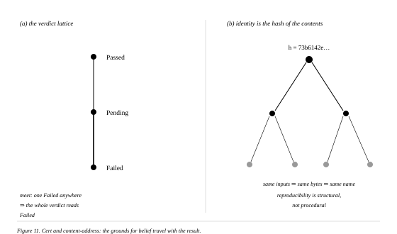
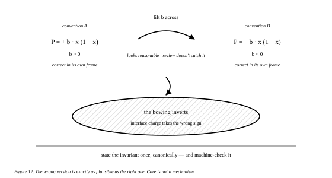

Greyscale, per STYLE.md. Slide N of the script uses figure N−1.
Captions are inside each SVG, so the figures travel self-contained.
Figure 1 · slide 2 · A ∩ B = ∅ over solvers
Figure 2 · slide 3 · hardness and the asymmetry

Figure 3 · slide 4 · the hierarchy, and what comes back

Figure 4 · slide 5 · certificate completeness — uncuttable

Figure 5 · slide 6 · the whole architecture — uncuttable

Figure 6 · slide 7 · the emitted artifact

Figure 7 · slide 8 · an observable derived from the closed grammar
Figure 8 · slide 9 · symmetry as an optimisation pass

Figure 9 · slide 10 · what it costs

Figure 10 · slide 11 · refusal is a feature

Figure 11 · slide 12 · trust travels with the file

Figure 12 · slide 13 · a sign-convention trap — uncuttable

Figures 2, 7, 9, 10 and 11 use straight edges deliberately — 7 is a syntax tree, 9 is a plot, and 10 and 11 follow the established conventions for decision diagrams, Hasse diagrams and Merkle DAGs. The rest are curved, being maps between abstract objects.